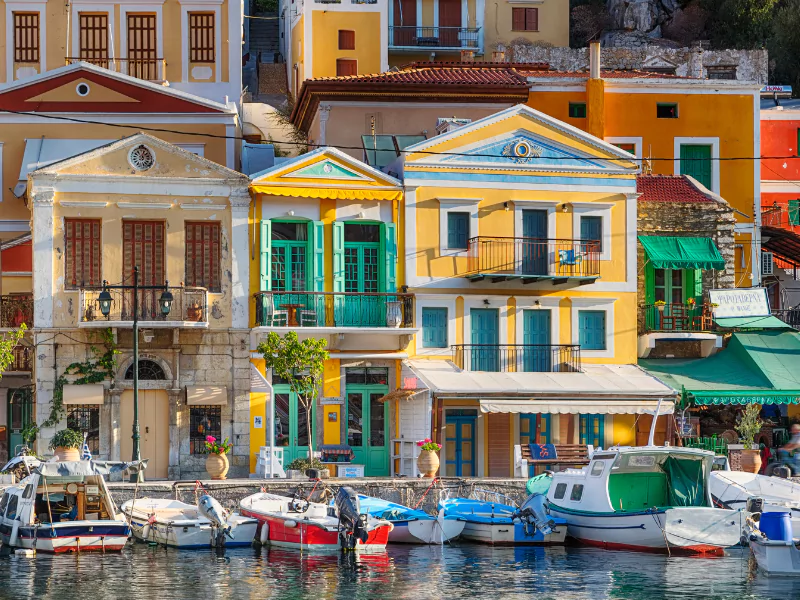
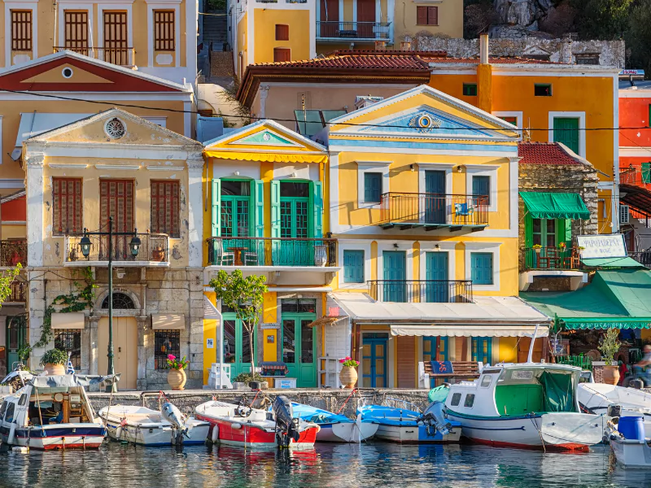

History
Greece has played a fundamental role in shaping the modern world. As the birthplace of democracy, philosophy, and the Olympic Games, its influence can still be felt today. The ancient city-states of Athens and Sparta were central to the development of political and military power, while Greek philosophers such as Socrates, Plato, and Aristotle laid the foundation for Western thought. The vast empire of Alexander the Great spread Greek culture and ideas far beyond its borders, leaving a lasting impact on history.
Culture
Greek culture is deeply rooted in traditions, mythology, and the arts. From epic poetry and ancient theater to modern literature and film, Greece has long been a hub of creativity. Greek cuisine is world-renowned, featuring dishes like moussaka, souvlaki, and baklava. Traditional Greek music and dance, including the well-known syrtaki, reflect the country’s lively and welcoming spirit. Festivals and religious celebrations remain an integral part of Greek life, with Easter being one of the most significant and widely celebrated events.
Top Attractions
- Acropolis of Athens
- Santorini's stunning landscapes
- Delphi, the ancient oracle site
Interesting Facts
- Greece has over 6,000 islands
- It is home to 18 UNESCO World Heritage Sites
- Greek is one of the oldest written languages still in use today
Gallery

 
